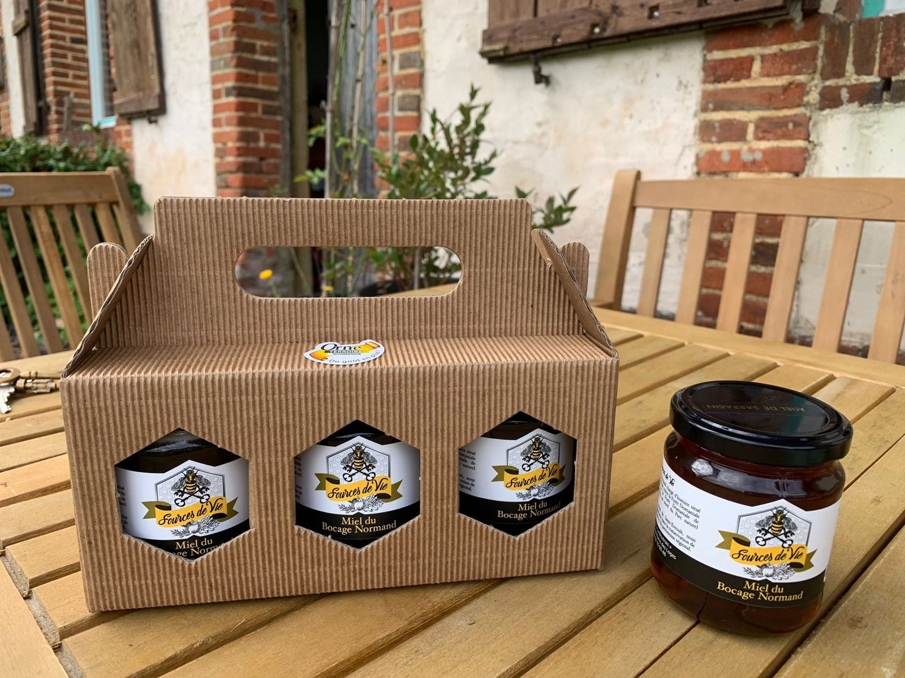
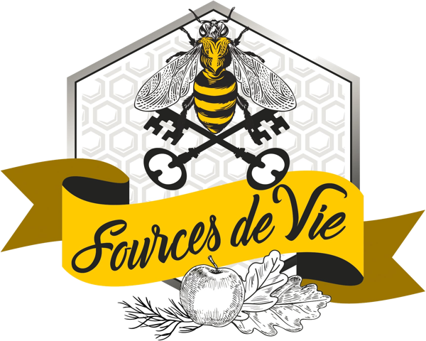
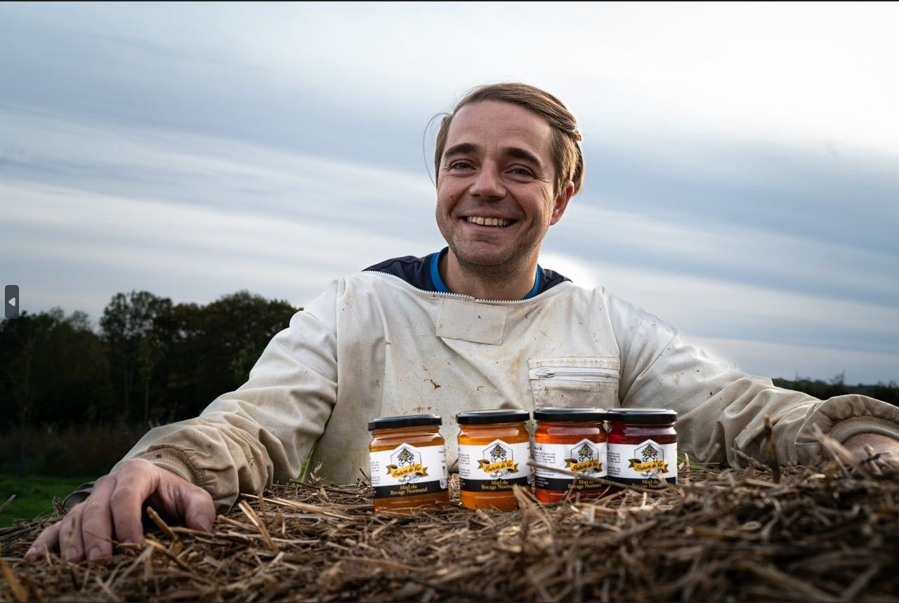
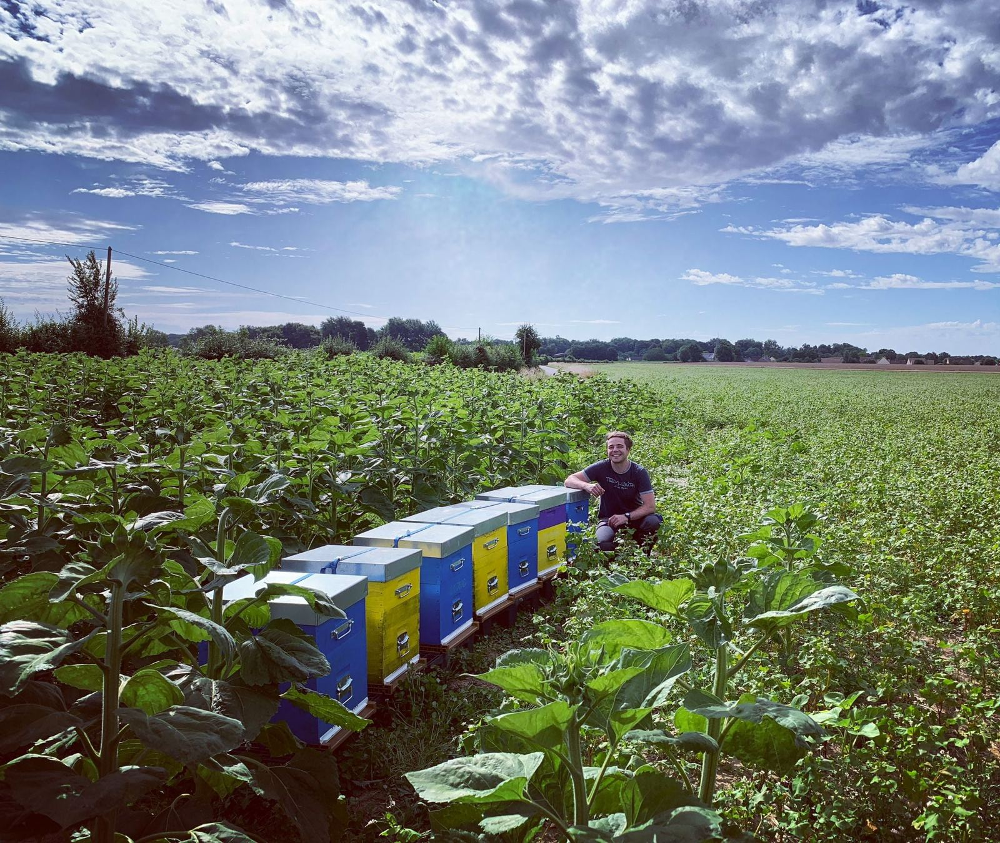
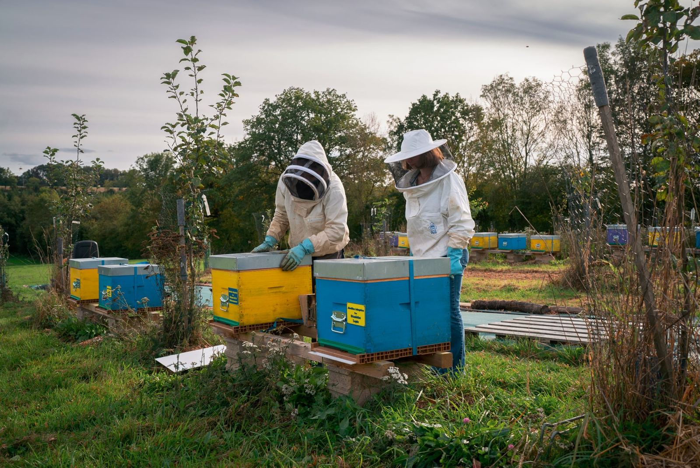
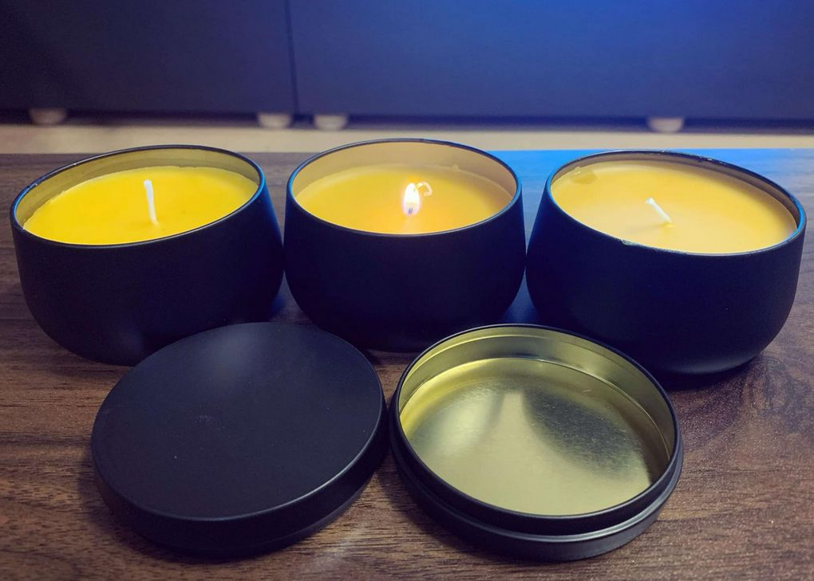
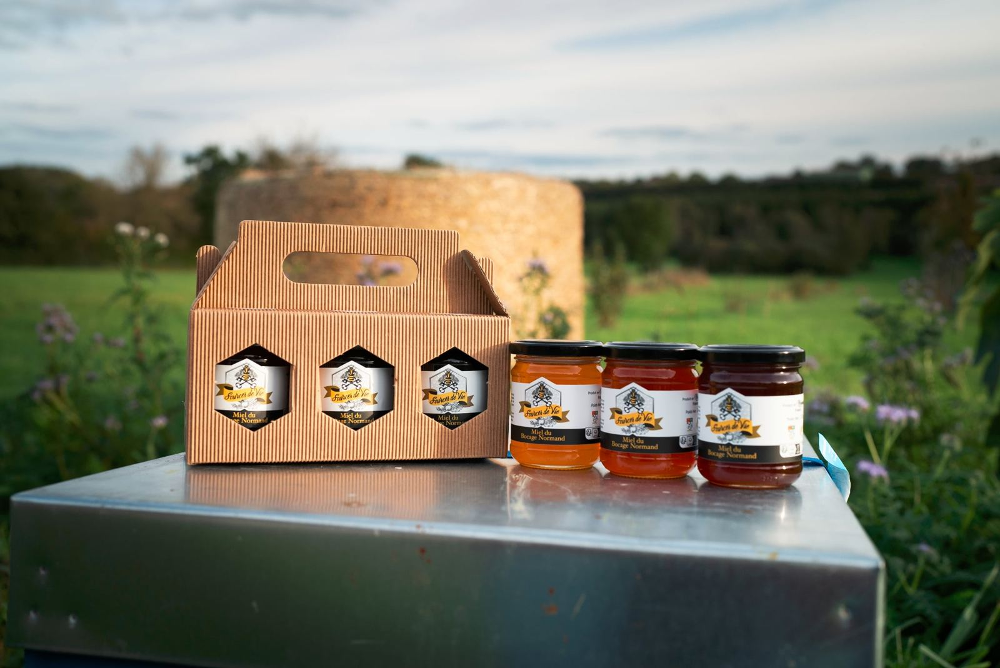

Le coffret découverte
Trois pots de 250 g, avec les parfums de votre choix, présentés dans une jolie boîte en carton kraft. L'idée cadeau qui plaît à tout le monde.

La FermeSources de Vie
Seize miels, pour la plupart bio, nés dans les forêts, les vergers et les prairies de l'Orne. Ici, on prend le temps de faire les choses bien, pour les abeilles comme pour vous.



Notre histoire
George s'est lancé dans l'apiculture en 2021. Aujourd'hui, il s'occupe de 70 ruches, installées à la ferme de Saint-Pierre-des-Loges et dans plusieurs coins du bocage normand : forêts, vergers et prairies.
Si la ferme s'appelle Sources de Vie, c'est parce que sa parcelle en est pleine : on y croise des chouettes, des chevreuils, des oiseaux de haies… et bien sûr des abeilles. George est d'abord un amoureux de la nature, et ça se goûte dans ses miels.
La gamme
Chaque miel raconte un coin de Normandie.
Tous existent en 250 g, 400 g et 1 kg.
Les miels marqués BIO sont issus de l'agriculture biologique, certifiés par Ecocert.
Pour vous
Pour commander, il suffit d'appeler George ou de lui écrire. La livraison est offerte.
Les petits prix
Nos deux miels les plus doux, à prix réduit toute l'année.
Prix par pot, au choix Colza ou Printemps.

Trois pots de 250 g, avec les parfums de votre choix, présentés dans une jolie boîte en carton kraft. L'idée cadeau qui plaît à tout le monde.

Coulée avec la cire naturelle de nos ruches, dans une jolie boîte en métal. Parfaite pour le Réveillon ou la Saint-Valentin, et disponible toute l'année.
Livraison offerte
Votre miel arrive chez vous, sans frais.
Une petite remise
à partir de 10 pots achetés.
Professionnels
Vous tenez une épicerie fine, une cave, un magasin de producteurs ou une boutique cadeaux ? Nos miels plaisent à une clientèle qui cherche du local, du bio et une vraie histoire derrière le produit.
Tarifs professionnels sur demande
Demander les tarifs
Commander, une question ?
Pour commander ou pour toute question, appelez George ou écrivez-lui. Il vous répond lui-même.